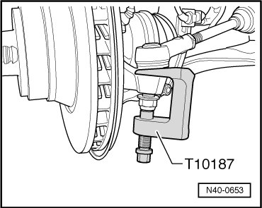
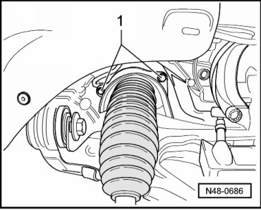
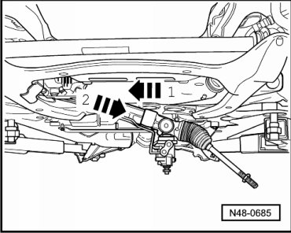
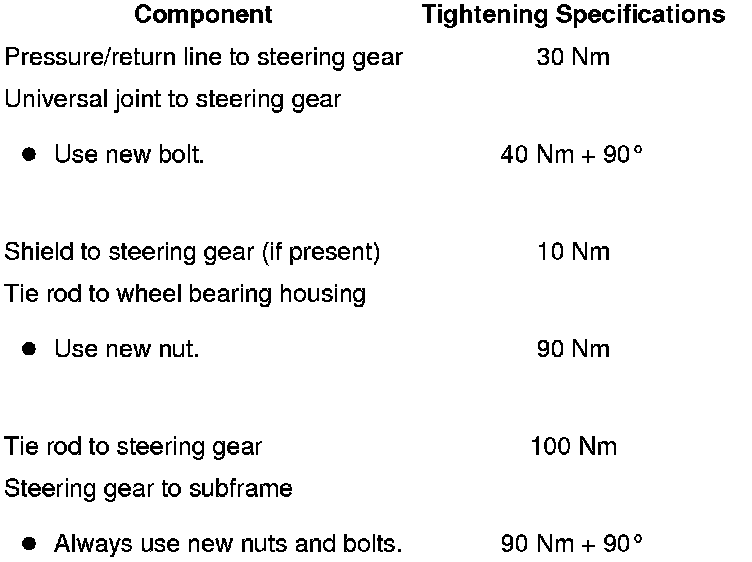

Power Steering Gear
Power Steering Gear
Special tools, testers and auxiliary items required
• Hose clamp (3094)
• Torque wrench (VAG 1332)
• Ball joint puller (T10187)
Removing
CAUTION!
Before starting work, stabilizer bars must be coupled in vehicles with separable stabilizer bars. Otherwise, there is the danger of injury caused by unintentional separation.
- Remove wheels.
- Pinch off intake line and return line using hose clamps (3094).
- Press off tie rods from wheel bearing housing.

- Remove the left tie rod from the steering gear.
- Remove bracket for hydraulic lines - 1 -.

- Remove pressure line and return line - 2 - from steering gear.
- Rotate steering gear toward left until stop.
- If present, remove shield - A - from steering gear (2 bolts).

- Remove bolt - B - for universal joint at steering gear and remove universal joint from steering gear.
- Remove drive axle heat shield bolts - 1 - and shield.

- Remove the steering gear bolts.
- Slide steering gear to right side of vehicle - direction of arrow 1 -.

- Swing left tie rod downward.
- Remove steering gear downward toward left side of vehicle - direction of arrow 2 -.
Installing
Installation is the reverse of removal, with special attention to the following:
- Bleed steering system. Refer to --> [ Power Steering System Bleeding ] Power Steering System Bleeding.
- Check steering system for leaks. Refer to --> [ Steering System, Checking for Leaks ] Testing and Inspection.
- Check hydraulic fluid level and top off, if necessary.
- After installation, a vehicle alignment must be performed --> [ Wheel Alignment ] Wheel Alignment.
- Perform basic setting for steering angle sensor (G85).
Tightening Specifications
